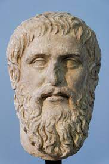

|  |
| Platão foi filosofo grego, considerado um dos principais pensadores |
| de sua época.Discípulo de Sócrates, procurava transmitir uma |
| profunda fé na razão e na verdade, adotando o lema de Sócrates |
| "o sábio é o virtuoso". por volta de 387 a.C., fundou sua escola |
| filosófica "Academia", onde reunia seus discípulos para estudar |
| Filosofia, Ciências, Matemática e Geometria.A alegoria da caverna, |
| também conhecida como parábola da caverna, mito da caverna ou |
| prisioneiros da caverna, é uma alegoria de intenção filósofo-pedagógica |
| além de representar a alienação de idéias e privação por parte de novas idéias. |
| Video no Canal Original |